Lists, Dictionaries, Tuples, and Sets in Python
In this document, we'll explore fundamental data structures in Python: lists, dictionaries, tuples, and sets.
Lists
A list can store multiples values. It's written with square brackets [ ].
Lists are ordered, changeable, and can contain duplicate items.
Here's a list:
a_list = ["Jason", True, "Vishal", "Vishal", 211]
print (a_list)
Run the code and you'll see this output:
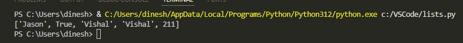
Access List Item
List items are ordered and accessed through their index number. Index number starts from 0.
The following code is printing the second item in the list. Each item can be accessed through the index number.
departments = ["Finance", "Administration", "IT", "Marketing", "Engineering"]
print (departments[1])
Output:
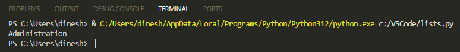
Change List Item
This code is changing the second item to Legal:
departments = ["Finance", "Administration", "IT", "Marketing", "Engineering"]
departments[1] = "Legal"
print (departments)
Output:
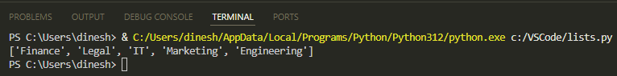
Add or Remove List Item
This code is using the append method to add an item to the list:
departments = ["Finance", "Administration", "IT", "Marketing", "Engineering"]
departments.append("Procurement")
print (departments)
Output:
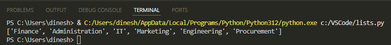
To remove an item from the list, you can use the remove method. For example: colors.remove(“green”).
Sort List Items
This code is sorting the list in ascending alphabetical order:
departments = ["Finance", "Administration", "IT", "Marketing", "Engineering"]
departments.sort()
print (departments)
Output:
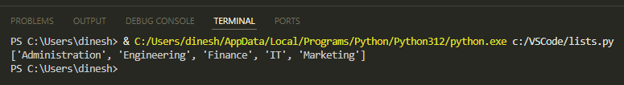
Dictionaries
A dictionary stores items in key: value format. Keys must be unique, although values can be duplicates. Dictionary items are ordered and changeable.
Dictionary is written with curly brackets { }.
Here's a dictionary:
a_dict = {
"integer": 112,
"boolean": True,
"string": "Jane",
"duplicate_int": 112,
}
print(a_dict)
Run the code and you'll see this output:
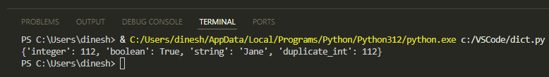
Get a Dictionary Value
This code prints the value for the key Fred:
teacher_subject = {
"Jaya": "Cellular biology",
"Shriya": "Chemistry",
"Jane": "Genetics",
"Fred": "Physics",
"John": "Astronomy",
}
print(teacher_subject ["Fred"])
Output:
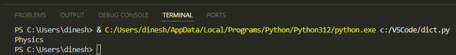
Alternatively, you can use the get method to get the value:
teacher_subject = {
"Jaya": "Cellular biology",
"Shriya": "Chemistry",
"Jane": "Genetics",
"Fred": "Physics",
"John": "Astronomy",
}
print(teacher_subject.get("Fred"))
Change a Dictionary Value
This code changes the value for the key Jaya:
teacher_subject = {
"Jaya": "Cellular biology",
"Shriya": "Chemistry",
"Jane": "Genetics",
"Fred": "Physics",
"John": "Astronomy",
}
teacher_subject ["Jaya"] = "Immunology"
print(teacher_subject)
Output:
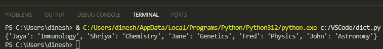
Add a Dictionary Item
This can be done by adding a new key and its value:
teacher_subject = {
"Jaya": "Cellular biology",
"Shriya": "Chemistry",
"Jane": "Genetics",
}
teacher_subject ["Sujith"] = "Biochemistry"
print(teacher_subject)
Output:
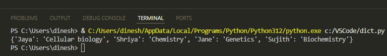
Remove a Dictionary Item
This can be done by using the pop method:
teacher_subject = {
"Jaya": "Cellular biology",
"Shriya": "Chemistry",
"Jane": "Genetics",
"Sujith": "Biochemistry",
}
print(teacher_subject) #print before removal
teacher_subject.pop("Sujith")
print(teacher_subject) #print after removal
Output:
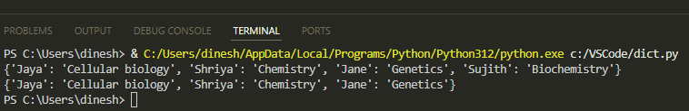
Tuples
A tuple, like a list variable, can store multiple items. In a list, you can add, remove, and modify items. In contrast, once a tuple is created, you cannot change items in the tuple or add or remove items.
Tuples are generally faster than list because of their read-only nature.
Tuple is written with parenthesis ( ) and can contain duplicates.
Here's a tuple:
a_tuple = (211, "Anita", True, 3.14, 211)
print(a_tuple)
Run the code and you'll see this output:
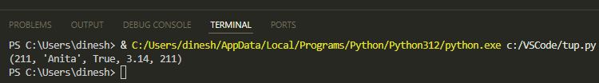
Access a Tuple Item
Tuple items are ordered, and you can access them using an index number.
This code will print the fourth item in the tuple:
departments = ("Finance", "Administration", "IT", "Marketing", "Engineering")
print (departments[3])
Output:
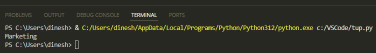
Access a Range of Tuple Items
You can access a range of tuple items by using a colon.
This code selects the items from 1 to 3 index numbers:
departments = ("Finance", "Admin", "IT", "Marketing", "Engineering", "Legal")
print (departments[1:4])
💡 Tip: Note that with
[1:4], the selection starts at the start index and goes up to but doesn't include the end index. That means it includes indices 1, 2, and 3 but doesn't include 4.
Output:
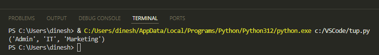
This code selects items from Marketing to the end:
departments = ("Finance", "Admin", "IT", "Marketing", "Engineering", "Legal")
print (departments[3:])
Output:
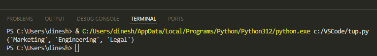
This code selects items from the beginning to IT:
departments = ("Finance", "Admin", "IT", "Marketing", "Engineering", "Legal")
print (departments[:3])
💡 Tip: It includes start index (which is 0) but doesn't include end index (which is 3).
Output:
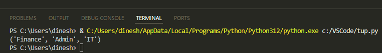
Sets
A set can also have multiple items, but they cannot be duplicates. You cannot change the set items but can add or remove items.
A set is written with curly brackets { }.
Here's a set:
a_set = {"Jane", 311, 7.14, True}
print(a_set)
When I run the code, I get this output:
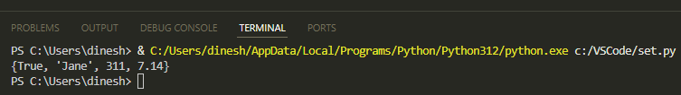
Sets are unordered. So, again when I run the code, the order of items changes.
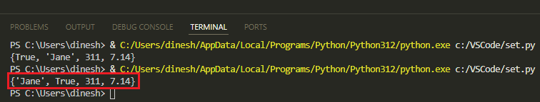
Add or Remove a Set Item
This code adds an item using the add method:
departments = {"Finance", "Engineering", "IT", "Marketing"}
departments.add("Quality Control")
print (departments)
Output:
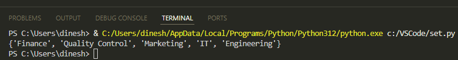
To remove an item from a set, you can use the remove method. For example: colors.remove(“green”).
Join Sets
Use the | operator to join sets:
departments_set1 = {"Finance", "Engineering"}
departments_set2 = {"Marketing", "Legal"}
departments_set3 = {"Procurement", "Logistics"}
combined_set = departments_set1 | departments_set2 | departments_set3
print (combined_set)
Output:
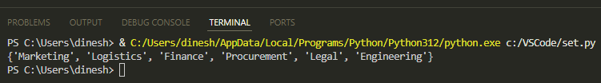
Difference
You can use the difference method to return only those items in the first set that aren't there in the other set.
In this code, the difference method will return Legal and IT that aren't there in the other set:
departments_set1 = {"Finance", "Marketing", "Legal", "IT"}
departments_set2 = {"Finance", "Logistics", "Marketing"}
set3 = departments_set1.difference(departments_set2)
print (set3)
Output:
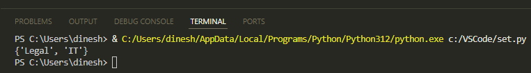
Difference Update
You can use difference_update method to retain only those items in the first set that aren't there in the other set.
In this code, the difference_update method updates first set with Legal and IT:
departments_set1 = {"Finance", "Marketing", "Legal", "IT"}
departments_set2 = {"Finance", "Logistics", "Marketing"}
departments_set1.difference_update(departments_set2)
print (departments_set1)
Output:
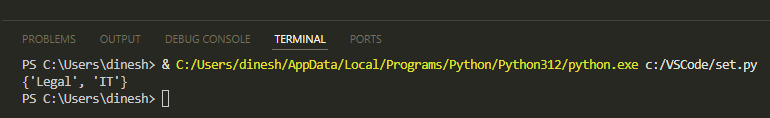
Symmetric Difference
You can use symmetric_difference method to return items that are in one of the sets but not in both:
departments_set1 = {"Finance", "Marketing", "Legal", "IT"}
departments_set2 = {"Finance", "Logistics", "Marketing"}
set3 = departments_set1.symmetric_difference(departments_set2)
print (set3)
Output:
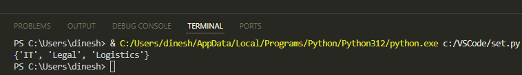
Convert One Data Structure into Another
There could be use cases where you want to convert one data structure into another. Let's cover few such cases.
List to a Tuple
For example, to make the data unchangeable, you might want to convert a list to a tuple:
a_list = ["Astronomy", 211, 71.1, "History"]
print (a_list)
a_tuple = tuple(a_list)
print (a_tuple)
Output:
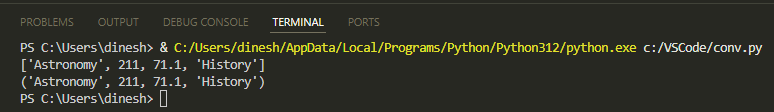
List to a Set
For example, to remove duplicates, you might want to convert a list to a set:
a_list = ["Astronomy", 211, 71.1, "History", "History", 211]
print (a_list)
a_set = set(a_list)
print (a_set)
Output:
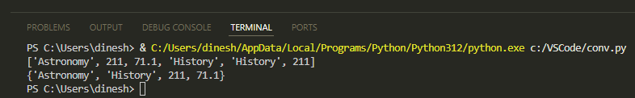
Dictionary to a Tuple
For example, to have the key: value items become unchangeable, you might want to convert a dictionary to a tuple:
a_dict = {"Astronomy": 1, "History": 2}
print (a_dict)
a_tuple = tuple(a_dict.items())
print (a_tuple)
Output:
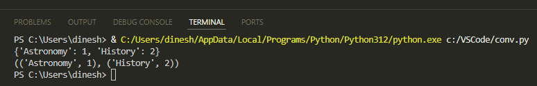
Tuple to a List
For example, to add an item, you might want to convert a tuple to a list:
a_tuple = ("Astronomy", "History", 211, 312)
print (a_tuple)
a_list = list(a_tuple)
a_list.append("Philosophy")
print (a_list)
Output:
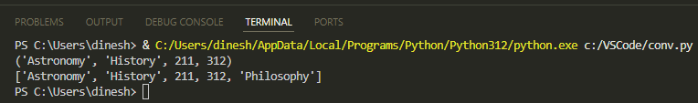
In this document, we've looked at the data structures in Python: lists, dictionaries, tuples, and sets. Each of these data structures has unique features. Lists provide ordered, changeable data; dictionaries provide key-value pair storage; tuples provide unchangeable data; and sets provide unique, unordered data.